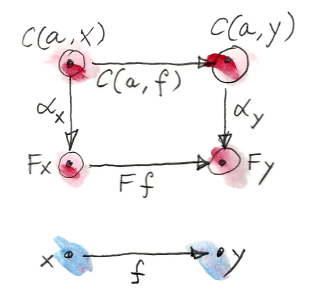
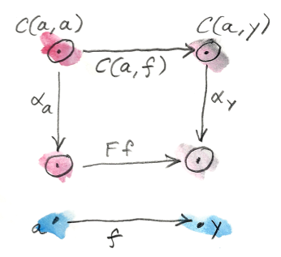
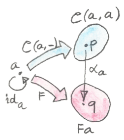
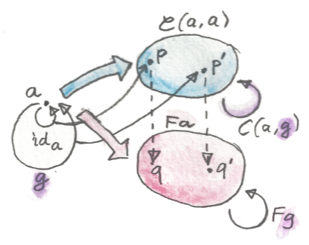
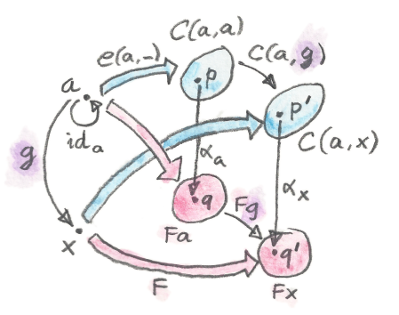

范畴论中的大多数构造，都是其他更具体数学领域中已有结果的推广。积、余积、幺半群、指数等，早在范畴论出现之前便已为人所知，只是在不同数学分支中可能使用不同名称。集合论中的笛卡尔积、序理论中的交、逻辑中的合取，都是范畴积这一抽象思想的具体例子。
Yoneda 引理在这方面十分突出：它是一个关于一般范畴的广泛断言，在其他数学分支中几乎没有先例。有人说它最接近的类比是群论中的 Cayley 定理（每个群都同构于某个集合上的置换群）。
Yoneda 引理的背景是任意范畴 C，以及从 C 到 Set 的函子 F。上一章看到，一些 Set 值函子（Set-valued functor）是可表的，也就是与 Hom 函子同构。Yoneda 引理告诉我们：所有 Set 值函子都可以通过自然变换从 Hom 函子得到，而且它明确枚举了所有这样的变换。
讨论自然变换时，我提过自然性条件可能相当严格。当你在一个对象处定义自然变换的一个分量时，自然性可能强到足以沿着连接它与另一对象的态射，把这个分量“输送”到那个对象。源范畴与目标范畴中对象之间的箭头越多，输送自然变换分量所受的约束也越多。Set 恰好是一个箭头极其丰富的范畴。
Yoneda 引理告诉我们：Hom 函子与任意另一个函子 F 之间的自然变换，只需指定它在一个点上的一个分量值，就完全确定了！自然变换的其余部分都由自然性条件推出。
先复习 Yoneda 引理中两个函子之间的自然性条件。第一个是 Hom 函子。对 C 中固定对象 a，它把 C 中任意对象 x 映射到态射集合 C(a,x)。我们也已经看到，它把任意态射 f:x→y 映射到 C(a,f)。
第二个函子是任意 Set 值函子 F。
把两个函子之间的自然变换称为 α。因为在 Set 中操作，自然变换的分量，如 αx 或 αy，只是集合之间的普通函数：
αy : C(a,y) → F y

因为它们只是函数，所以可以观察它们在具体点上的值。但集合 C(a,x) 中的点是什么？关键观察在这里：C(a,x) 中的每个点，也是一支从 a 到 x 的态射 h。
因此 α 的自然性方块：
逐点作用于 h 后变成：
你可能记得，上一章把 Hom 函子 C(a,-) 对态射 f 的作用定义为前复合：
于是得到：
把它特化到 x=a 的情形，就能看出这个条件有多强。

此时 h 变成从 a 到 a 的态射。已知至少存在一支这样的态射，即 h=ida。把它代入：
注意刚才发生了什么：左边是 αy 对 C(a,y) 中任意元素 f 的作用，而它完全由 αa 在 ida 处的一个值决定。可以任意选择这样的值，它都会生成一个自然变换。因为 αa 的值属于集合 F a，所以 F a 中任意一点都定义某个 α。
反过来，给定从 C(a,-) 到 F 的任意自然变换 α，可以在 ida 处求值，从而得到 F a 中的一点。
我们刚刚证明了 Yoneda 引理：
从 C(a,-) 到 F 的自然变换，与 F a 的元素之间存在一一对应。
换句话说：
或者，用 [C,Set] 表示 C 与 Set 之间的函子范畴；自然变换集合就是该范畴中的 hom 集，于是可以写成：
稍后会解释，这个对应实际上怎样构成自然同构。
直觉
现在试着为这个结果建立一些直觉。最惊人的地方是：整个自然变换从唯一一个成核点凝结出来——也就是我们在 ida 处赋给它的值。它沿着自然性条件从这个点扩散，淹没 C 在 Set 中的像。先考察 C 在 C(a,-) 下的像。
从 a 自身的像开始。在 Hom 函子 C(a,-) 下，a 映射到集合 C(a,a)；而在函子 F 下，它映射到集合 F a。自然变换的分量 αa 是从 C(a,a) 到 F a 的某个函数。只关注 C(a,a) 中一点，即对应态射 ida 的点。为强调它只是集合中的一个点，把它称为 p。分量 αa 应把 p 映射到 F a 中某一点 q。下面会说明，任意选择 q 都会导出唯一自然变换。

第一个断言是：选择一点 q 会唯一决定函数 αa 的其余部分。事实上，任取 C(a,a) 中另一个点 p′，它对应从 a 到 a 的某支态射 g。Yoneda 引理的魔法就在这里：g 可以看作集合 C(a,a) 中的点 p′；与此同时，它又选出了集合之间的两个函数。在 Hom 函子下，态射 g 映射为函数 C(a,g)；在 F 下，它映射为 F g。

现在考察 C(a,g) 对原先的 p 的作用；记住，p 对应 ida。按定义它是前复合 g∘ida，等于 g，也就对应点 p′。所以态射 g 被映射成一个函数，这个函数作用于 p 后生成 p′，也就是 g。我们绕了一圈又回到原点！
再看 F g 对 q 的作用。它得到 F a 中某一点 q′。为了让自然性方块交换，αa 必须把 p′ 映射到 q′。我们任取了 p′（即任意 g），并推导出它在 αa 下的映射。因此函数 αa 已完全确定。
第二个断言是：对于 C 中任何与 a 相连的对象 x，αx 都被唯一确定。推理类似，只是多了两个集合 C(a,x) 与 F x；从 a 到 x 的态射 g 在 Hom 函子下映射为：
在 F 下映射为：
C(a,g) 作用于 p 仍由前复合给出：g∘ida，对应 C(a,x) 中一点 p′。自然性决定 αx 作用于 p′ 的值为：
因为 p′ 是任意的，所以整个函数 αx 由此确定。

如果 C 中有些对象与 a 毫无连接呢？它们在 C(a,-) 下全都映射到同一个集合——空集。回忆空集是集合范畴的始对象，也就是说，从它到任意其他集合都有唯一函数。我们称这个函数为 absurd。所以这里同样没有选择：自然变换的分量只能是 absurd。
理解 Yoneda 引理的一种方式是认识到：Set 值函子之间的自然变换只是一族函数，而函数通常有损。函数可能压缩信息，也可能只覆盖陪域的一部分。只有可逆函数——同构——不会损失信息。于是，最好的结构保持 Set 值函子就是可表函子：它们要么是 Hom 函子，要么与 Hom 函子自然同构。任何其他函子 F 都通过某种有损变换从 Hom 函子得到。这种变换不仅可能丢失信息，还可能只覆盖 F 在 Set 中之像的一小部分。
Haskell 中的 Yoneda
我们已经在 Haskell 中以 Reader 函子的面貌遇到 Hom 函子：
type Reader a x = a -> xReader 通过前复合映射态射（这里是函数）：
instance Functor (Reader a) where
fmap f h = f . hYoneda 引理告诉我们，Reader 函子可以自然地映射到任何其他函子。
自然变换是多态函数。所以给定函子 F，存在从 Reader 函子到它的映射：
alpha :: forall x . (a -> x) -> F x一如既往，forall 可省略，但我喜欢显式写出它，以强调自然变换的参数多态性。
Yoneda 引理告诉我们，这些自然变换与 F a 的元素一一对应：
forall x . (a -> x) -> F x ≅ F a这个恒等式的右边，就是我们通常所说的数据结构。还记得把函子解释为广义容器吗？F a 是装有 a 的容器。但左边是一个以函数为参数的多态函数。Yoneda 引理告诉我们，两种表示等价——它们包含相同信息。
换一种说法：给我一个下面类型的多态函数：
alpha :: forall x . (a -> x) -> F x我就能生成一个装有 a 的容器。技巧正是证明 Yoneda 引理时用过的：用 id 调用这个函数，得到 F a 的元素：
alpha id :: F a反过来也成立。给定 F a 类型的值：
fa :: F a可以定义多态函数：
alpha h = fmap h fa它具有正确类型。你可以轻易地在两种表示之间来回转换。
多种表示的优势在于：其中一种可能比另一种更容易组合，也可能在某些应用中更高效。
这个原则最简单的例子，是编译器构造中经常使用的代码变换：续延传递风格（continuation-passing style, CPS）。它是把 Yoneda 引理应用于恒等函子的最简单情形。用恒等函子替换 F，得到：
forall r . (a -> r) -> r ≅ a这个公式表示：任何类型 a 都可以替换成一个接受 a 的“处理器”的函数。处理器是接受 a 并执行其余计算——即续延（continuation）——的函数。（类型 r 通常封装某种状态码。）
这种编程风格在 UI、异步系统与并发编程中十分常见。CPS 的缺点是会带来控制反转。代码被拆分到生产者与消费者（处理器）之间，不容易组合。做过一定量非平凡 Web 编程的人，都熟悉相互作用的有状态处理器造成的意大利面式代码噩梦。以后会看到，谨慎使用函子与 Monad，可以恢复 CPS 的一些组合性质。
Co-Yoneda
照例，反转箭头方向会免费得到另一个构造。把 Yoneda 引理应用于对偶范畴 Cop，便得到逆变函子之间的映射。
等价地，可以固定 Hom 函子的目标对象而不是源对象，从而推导出余 Yoneda 引理（co-Yoneda lemma）。我们得到从 C 到 Set 的逆变 Hom 函子 C(-,a)。Yoneda 引理的逆变版本，在从这个函子到任意其他逆变函子 F 的自然变换，与集合 F a 的元素之间建立一一对应：
下面是 co-Yoneda 引理的 Haskell 版本：
forall x . (x -> a) -> F x ≅ F a注意，在一些文献中，逆变版本才被称为 Yoneda 引理。
习题
- 证明构成 Haskell 中 Yoneda 同构的两个函数
phi与psi互为逆：phi :: (forall x . (a -> x) -> F x) -> F a phi alpha = alpha id psi :: F a -> (forall x . (a -> x) -> F x) psi fa h = fmap h fa点击展开参考答案
一个方向：
phi (psi fa)=psi fa id=fmap id fa=fa，使用函子恒等律。另一个方向，对任意h，psi (phi alpha) h=fmap h (alpha id)=alpha (h . id)=alpha h；中间等式正是alpha的自然性。因此两边逐点相等。 - 离散范畴（discrete category）有对象，但除恒等态射外没有其他态射。对于从这种范畴出发的函子，Yoneda 引理怎样工作？
点击展开参考答案
固定对象
a后，C(a,a)是只含id_a的单元素集合；若x≠a，C(a,x)为空。自然变换在a处只需把id_a选到F a的某个元素；在其他对象处，从空集出发的函数唯一。没有非恒等态射带来额外自然性约束，因此自然变换仍恰与F a的元素一一对应。 - 单元列表
[()]除长度外不含其他信息，所以作为数据类型可视为整数编码：空列表编码零，单元素值[()]编码一，以此类推。使用列表函子的 Yoneda 引理构造这种数据类型的另一种表示。点击展开参考答案
Yoneda 表示为
forall x. (()→x)→[x]。因为函数()→x等价于选择一个x，可简写成forall x. x→[x]。编码数字n的值对任意x都返回replicate n x；用()实例化并传入()，便恢复长度为n的单元列表。